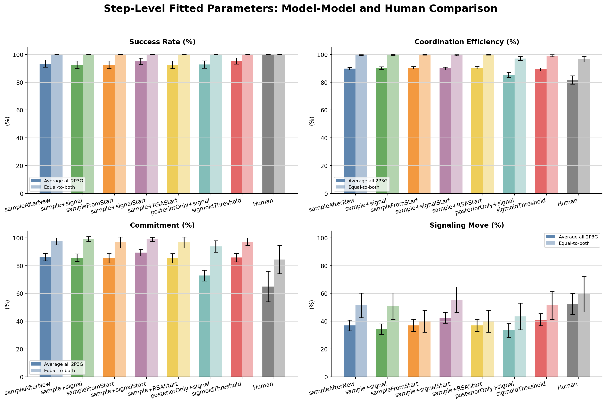
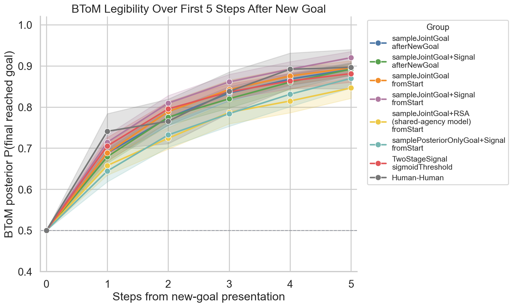
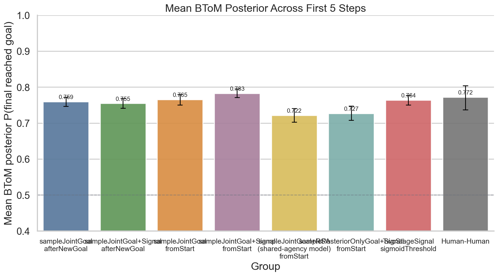
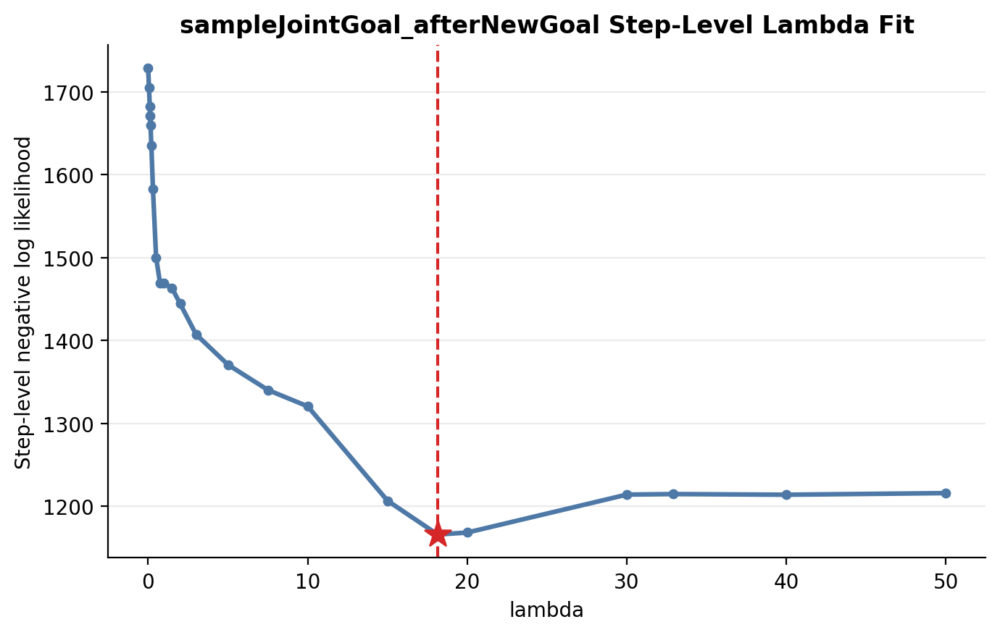
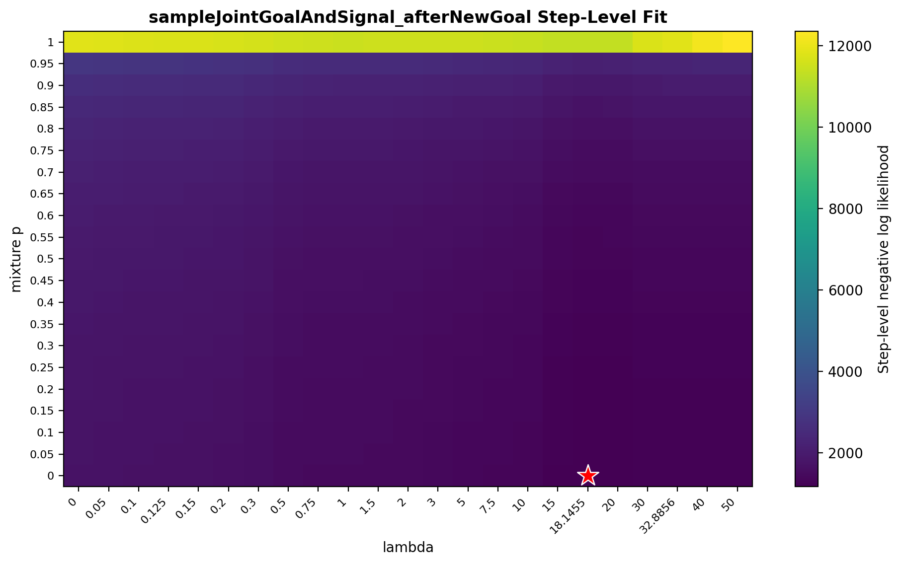
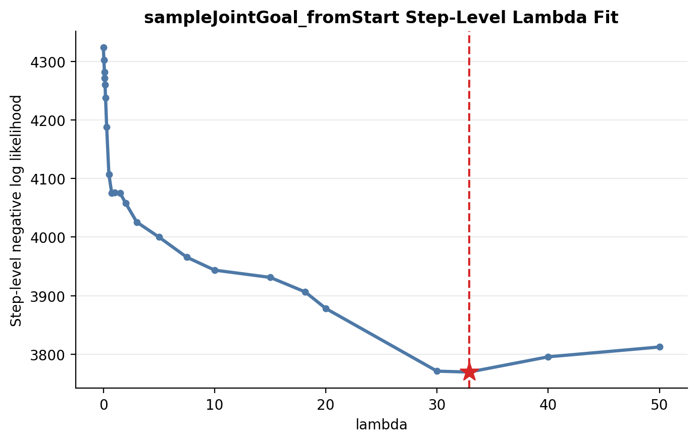
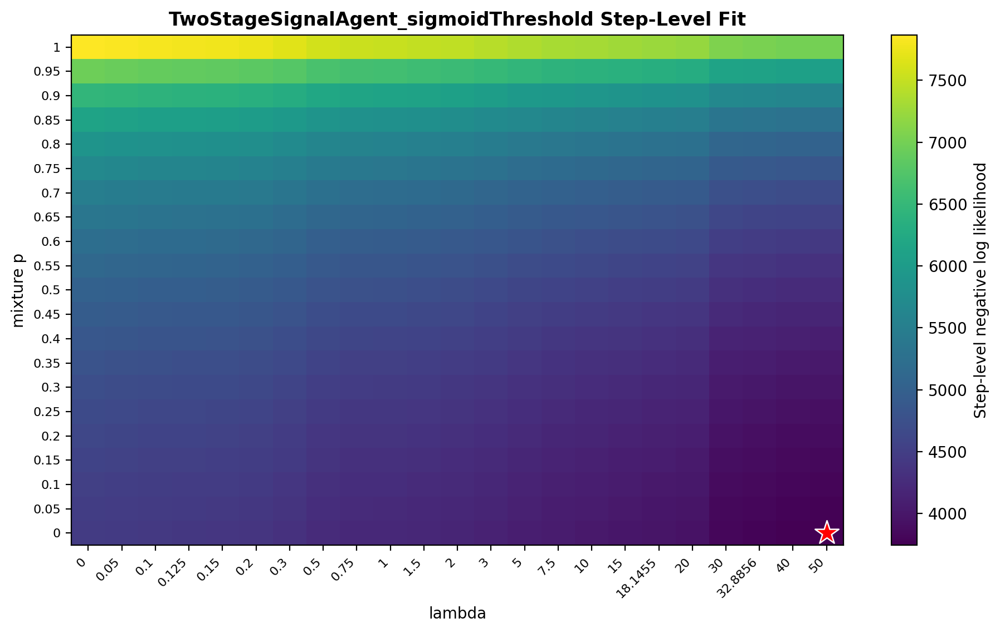

Primary Result Table
Rows use simulations at the step-level fitted parameter values. Values are percentages.
| Model | Scope | Step-Level Fit / Setting | Success | Efficiency | Commitment | Signaling |
|---|---|---|---|---|---|---|
| sampleJointGoal_afterNewGoal | Average all 2P3G | beta=3.0, lambda=18.1 from post-new-goal step-level action likelihood | 93.3 | 89.8 | 86.1 | 37.0 |
| sampleJointGoal_afterNewGoal | Equal-to-both | beta=3.0, lambda=18.1 from post-new-goal step-level action likelihood | 100.0 | 99.5 | 97.4 | 51.4 |
| sampleJointGoalAndSignal_afterNewGoal | Average all 2P3G | beta=3.0, lambda=18.1, mixture p=0 from post-new-goal step-level action likelihood | 92.5 | 90.1 | 85.7 | 34.3 |
| sampleJointGoalAndSignal_afterNewGoal | Equal-to-both | beta=3.0, lambda=18.1, mixture p=0 from post-new-goal step-level action likelihood | 100.0 | 99.7 | 99.1 | 50.9 |
| sampleJointGoal_fromStart | Average all 2P3G | beta=3.0, lambda=32.9 from all-step action likelihood | 92.5 | 90.4 | 85.3 | 37.0 |
| sampleJointGoal_fromStart | Equal-to-both | beta=3.0, lambda=32.9 from all-step action likelihood | 100.0 | 99.7 | 96.7 | 40.0 |
| TwoStageSignalAgent_sigmoidThreshold | Average all 2P3G | beta=3.0, tau=2/3, eta=0, lambda=50, mixture p=0 from all-step action likelihood (bounded grid cap: lambda <= 50) | 95.3 | 89.2 | 85.8 | 41.1 |
| TwoStageSignalAgent_sigmoidThreshold | Equal-to-both | beta=3.0, tau=2/3, eta=0, lambda=50, mixture p=0 from all-step action likelihood (bounded grid cap: lambda <= 50) | 100.0 | 99.0 | 97.2 | 51.4 |
| Human-Human | Average all 2P3G | reference data, not fit | 100.0 | 81.6 | 65.0 | 52.5 |
| Human-Human | Equal-to-both | reference data, not fit | 100.0 | 96.6 | 84.4 | 59.4 |
Four-Measure Summary

BToM Legibility After New-Goal Presentation
BToM legibility is computed from the step-level fitted model simulations using the listener posterior from BToM_legibility_comparison.ipynb: posterior over the original shared goal versus the new goal, scored as \(P(\mathrm{final\ reached\ goal})\). Step 0 is the new-goal presentation moment.
Posterior Over First 5 Steps
{kind=link}

Mean Posterior Across First 5 Steps
{kind=link}

summary CSV step-level participant CSV mean posterior participant CSV
sampleJointGoal_afterNewGoal
Joint-RL before new-goal; after new-goal, infer posterior and resample a joint goal every step.
Core Math
Step-Level Fit Surface

sampleJointGoalAndSignal_afterNewGoal
Same post-new-goal joint-goal sampler plus a Bernoulli mixture signaling policy.
Core Math
Step-Level Fit Surface

sampleJointGoal_fromStart
Commitment model is active from trial start; new goals are added by posterior resizing.
Core Math
Step-Level Fit Surface

TwoStageSignalAgent_sigmoidThreshold
Always monitors joint-goal posterior and mixes early joint-RL with late committed-signaling policy via a sigmoid gate.
Core Math
Step-Level Fit Surface
